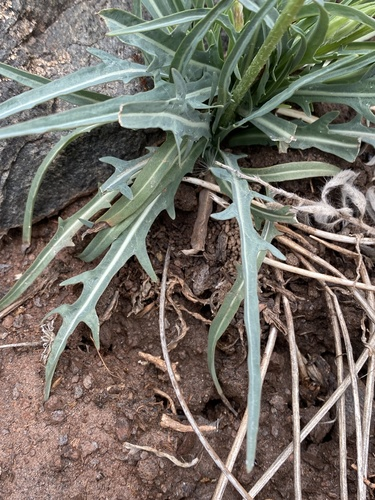

Yellow flowers
Grasses and sedges are grouped separately: they are wind-pollinated, so what you see is the seed head.
82 plants
 Leslie Seaton, some rights reserved (CC BY)") BalsamrootBalsamorhiza sagittata
BalsamrootBalsamorhiza sagittata Laura Gaudette, some rights reserved (CC BY), uploaded by Laura Gaudette") Bracted HoneysuckleLonicera involucrata
Bracted HoneysuckleLonicera involucrata Nolan Exe, some rights reserved (CC BY), uploaded by Nolan Exe") Brittle Prickly-pearOpuntia fragilis
Brittle Prickly-pearOpuntia fragilis W. Terry Hunefeld, some rights reserved (CC BY), uploaded by W. Terry Hunefeld") BroomweedGutierrezia sarothraeButte PrimroseOenothera caespitosa
BroomweedGutierrezia sarothraeButte PrimroseOenothera caespitosa Douglas Goldman, some rights reserved (CC BY-SA), uploaded by Douglas Goldman") Canada GoldenrodSolidago canadensis
Canada GoldenrodSolidago canadensis KENPEI, some rights reserved (CC BY)") Common SunflowerHelianthus annuus
Common SunflowerHelianthus annuus Matt Lavin, some rights reserved (CC BY)") Common TwinpodPhysaria didymocarpaCreeping Oregon GrapeMahonia repens
Common TwinpodPhysaria didymocarpaCreeping Oregon GrapeMahonia repens Denali National Park and Preserve, some rights reserved (CC BY)") Creeping SibbaldiaSibbaldia procumbensElegant GoldenrodSolidago lepida
Creeping SibbaldiaSibbaldia procumbensElegant GoldenrodSolidago lepida Tom Pollard, some rights reserved (CC BY), uploaded by Tom Pollard") Evening PrimroseOenothera biennis
Evening PrimroseOenothera biennis Douglas Goldman, some rights reserved (CC BY-SA), uploaded by Douglas Goldman") Flat-topped GoldenrodEuthamia graminifolia
Flat-topped GoldenrodEuthamia graminifolia Rob Foster, some rights reserved (CC BY), uploaded by Rob Foster") Floating Marsh-marigoldCaltha natans
Floating Marsh-marigoldCaltha natans er-birds, some rights reserved (CC BY), uploaded by er-birds") Fringed LoosestrifeLysimachia ciliataGlacier LilyErythronium grandiflorum
Fringed LoosestrifeLysimachia ciliataGlacier LilyErythronium grandiflorum Matt Lavin, some rights reserved (CC BY-SA)") Golden BeanThermopsis rhombifolia
Golden BeanThermopsis rhombifolia peganum, some rights reserved (CC BY-SA)") Golden Currant (Buffalo Currant)Ribes aureum
Golden Currant (Buffalo Currant)Ribes aureum crothfels, some rights reserved (CC BY)") Golden DrabaDraba aurea
Golden DrabaDraba aurea Thayne Tuason, some rights reserved (CC BY-SA)") Golden TickseedCoreopsis tinctoria
Golden TickseedCoreopsis tinctoria Douglas Goldman, some rights reserved (CC BY-SA), uploaded by Douglas Goldman") Gray GoldenrodSolidago nemoralisGumweedGrindelia squarrosa
Gray GoldenrodSolidago nemoralisGumweedGrindelia squarrosa Jim Morefield, some rights reserved (CC BY)") Hairy ArnicaArnica mollis
Hairy ArnicaArnica mollis Matt Lavin, some rights reserved (CC BY-SA)") Hairy Golden AsterHeterotheca villosa
Hairy Golden AsterHeterotheca villosa psweet, some rights reserved (CC BY-SA), uploaded by psweet") Heart-leaved Alexanders (Golden Alexanders)Zizia apteraHeart-leaved ArnicaArnica cordifolia
Heart-leaved Alexanders (Golden Alexanders)Zizia apteraHeart-leaved ArnicaArnica cordifolia Tero Laakso, some rights reserved (CC BY-SA)") Jerusalem ArtichokeHelianthus tuberosus
Jerusalem ArtichokeHelianthus tuberosus Steve Matson, some rights reserved (CC BY), uploaded by Steve Matson") Lance-leaved StonecropSedum lanceolatum
Lance-leaved StonecropSedum lanceolatum Andreas Stiller, some rights reserved (CC BY), uploaded by Andreas Stiller") Late GoldenrodSolidago gigantea
Late GoldenrodSolidago gigantea H. Zell, some rights reserved (CC BY-SA)") Leafy ArnicaArnica chamissonis
Leafy ArnicaArnica chamissonis eeyipes, some rights reserved (CC BY)") Marsh MarigoldCaltha palustrisMaximilian SunflowerHelianthus maximiliani
Marsh MarigoldCaltha palustrisMaximilian SunflowerHelianthus maximiliani My-Lan Le, some rights reserved (CC BY), uploaded by My-Lan Le") Meadow ArnicaArnica fulgensNarrow-leaved HawkweedHieracium umbellatum
Meadow ArnicaArnica fulgensNarrow-leaved HawkweedHieracium umbellatum Bob Nieman, some rights reserved (CC BY), uploaded by Bob Nieman") Nuttall's SunflowerHelianthus nuttallii
Nuttall's SunflowerHelianthus nuttallii Caleb Catto, some rights reserved (CC BY), uploaded by Caleb Catto") Pale AgoserisAgoseris glauca
Pale AgoserisAgoseris glauca Andrey Zharkikh, some rights reserved (CC BY)") Plains Prickly Pear CactusOpuntia polyacantha
Plains Prickly Pear CactusOpuntia polyacantha Dustin Snider, some rights reserved (CC BY), uploaded by Dustin Snider") Prairie ButtercupRanunculus rhomboideus
Prairie ButtercupRanunculus rhomboideus Matt Lavin, some rights reserved (CC BY-SA)") Prairie CinquefoilPotentilla pensylvanica
Prairie CinquefoilPotentilla pensylvanica Joshua Mayer, some rights reserved (CC BY-SA)") Prairie Cinquefoil (Tall Cinquefoil)Drymocallis arguta
Prairie Cinquefoil (Tall Cinquefoil)Drymocallis arguta Meghan Cassidy, some rights reserved (CC BY-SA), uploaded by Meghan Cassidy") Prairie ConeflowerRatibida columniferaPrairie GoldenrodSolidago missouriensis
Prairie ConeflowerRatibida columniferaPrairie GoldenrodSolidago missouriensis Matt Lavin, some rights reserved (CC BY-SA)") RabbitbrushEricameria nauseosa
RabbitbrushEricameria nauseosa Rat RootAcorus americanus
Rat RootAcorus americanus Roadside Agrimony (Woodland Agrimony)Agrimonia striataRocky Mountain BeeplantPeritoma serrulata
Roadside Agrimony (Woodland Agrimony)Agrimonia striataRocky Mountain BeeplantPeritoma serrulata RoserootRhodiola integrifoliaRound-leaved Yellow VioletViola orbiculata
RoserootRhodiola integrifoliaRound-leaved Yellow VioletViola orbiculata
Short-beaked AgoserisAgoseris parvifloraShrubby CinquefoilDasiphora fruticosaSilverweedPotentilla anserina Slender Cinquefoil (Graceful Cinquefoil)Potentilla gracilisSneezeweedHelenium autumnaleSpear-leaved ArnicaArnica lonchophylla
Slender Cinquefoil (Graceful Cinquefoil)Potentilla gracilisSneezeweedHelenium autumnaleSpear-leaved ArnicaArnica lonchophylla Square-stem MonkeyflowerMimulus ringensSticky GoldenrodSolidago glutinosa
Square-stem MonkeyflowerMimulus ringensSticky GoldenrodSolidago glutinosa Andrey Zharkikh, some rights reserved (CC BY)") Sticky Goldenrod (Mount Albert Goldenrod)Solidago simplex
Sticky Goldenrod (Mount Albert Goldenrod)Solidago simplex Matt Lavin, some rights reserved (CC BY-SA)") Stiff GoldenrodSolidago rigidaStiff GoldenrodOligoneuron rigidumStiff Sunflower (Rhombic-leaved Sunflower)Helianthus pauciflorus
Stiff GoldenrodSolidago rigidaStiff GoldenrodOligoneuron rigidumStiff Sunflower (Rhombic-leaved Sunflower)Helianthus pauciflorus Sandy Wolkenberg, some rights reserved (CC BY), uploaded by Sandy Wolkenberg") Tall GoldenrodSolidago altissima
Tall GoldenrodSolidago altissima Matt Lavin, some rights reserved (CC BY-SA)") Twin ArnicaArnica sororia
Twin ArnicaArnica sororia Rob Routledge, Sault College, Bugwood.org, some rights reserved (CC BY)") Twining Honeysuckle (Limber Honeysuckle)Lonicera dioica
Twining Honeysuckle (Limber Honeysuckle)Lonicera dioica Woolly CinquefoilPotentilla hippianaWoolly GroundselPackera canaYellow AngelicaAngelica dawsonii
Woolly CinquefoilPotentilla hippianaWoolly GroundselPackera canaYellow AngelicaAngelica dawsonii Joshua Mayer, some rights reserved (CC BY-SA)") Yellow AvensGeum aleppicum
Yellow AvensGeum aleppicum J Brew, some rights reserved (CC BY-SA), uploaded by J Brew") Yellow BeardtonguePenstemon confertus
Yellow BeardtonguePenstemon confertus Yellow BuckwheatEriogonum flavum
Yellow BuckwheatEriogonum flavum Alex Abair, some rights reserved (CC BY), uploaded by Alex Abair") Yellow ColumbineAquilegia flavescens
Yellow ColumbineAquilegia flavescens Laura Clark, some rights reserved (CC BY), uploaded by Laura Clark") Yellow FlaxLinum rigidum
Yellow FlaxLinum rigidum Yellow Lady's SlipperCypripedium parviflorum
Yellow Lady's SlipperCypripedium parviflorum Matt Berger, some rights reserved (CC BY), uploaded by Matt Berger") Yellow Monkey FlowerErythranthe guttata
Yellow Monkey FlowerErythranthe guttata Jason Hollinger, some rights reserved (CC BY-SA)") Yellow Mountain AvensDryas drummondii
Yellow Mountain AvensDryas drummondii Matt Lavin, some rights reserved (CC BY-SA)") Yellow Owl CloverOrthocarpus luteusYellow PaintbrushCastilleja lutescens
Yellow Owl CloverOrthocarpus luteusYellow PaintbrushCastilleja lutescens gonodactylus, some rights reserved (CC BY), uploaded by gonodactylus") Yellow Pond-lilyNuphar variegata
Yellow Pond-lilyNuphar variegata Matt Lavin, some rights reserved (CC BY-SA)") Yellow PucoonLithospermum ruderale
Yellow PucoonLithospermum ruderale Caleb Catto, some rights reserved (CC BY), uploaded by Caleb Catto") Yellow RattleRhinanthus minor
Yellow RattleRhinanthus minor aarongunnar, some rights reserved (CC BY), uploaded by aarongunnar") Yellow-flowered LocoweedOxytropis campestris
Yellow-flowered LocoweedOxytropis campestris Matt Lavin, some rights reserved (CC BY-SA)") YellowbellsFritillaria pudicaYellowstone DrabaDraba incerta
YellowbellsFritillaria pudicaYellowstone DrabaDraba incerta